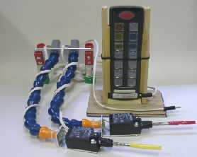
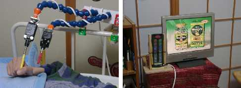

かならずお読みください→
環境制御装置入門機
『環境制御装置』とは誰が命名したのか知りませんが，ずいぶん名前で損をしているように思います．初めてこの言葉を聞いて何に使う装置かわかる人はまずいないでしょう．
環境制御装置について詳しい説明は，こころＷｅｂのこころリソースブック，第２部様々な活動を補助する装置，第１９章環境制御にあります．また，さらにリンクをたどれば一通りの知識が身に付くでしょう．
環境制御装置は，自立生活を目指す方にとっては実に有効な道具ですが，そうでない方にとってはかなり高価でややこしい代物です．その人や周囲の人の生活や好みによって，存在価値がずいぶん変わります．つまり使い方，生かし方が肝心な道具と言えます．ですから，勧められるまま購入したけれど，道具を生かし切れていない方もいないわけではありません．また，購入に際して，流通している何種類かの商品から，どの機種を選定するかも悩むところです．
また，環境制御装置を必要とされる方は，一般的にかなりお身体の不自由な方です．ご家族もずいぶんお疲れになっていることが多いです．このような方々に退院後の生活について，またその道具としての環境制御装置について，説明するのは簡単ですが，ご理解いただくことは簡単ではありません．見たことも聞いたこともない『環境制御装置』について簡単な説明を聞かされただけでは，「先生にお任せします」と答えるしかないでしょう．この問題を解決するためには，退院前から，実際に使っていただくのが一番だと思います．それも，連続した何日間を昼夜問わず使っていただき，道具を使う『うまみ』を経験していただくことが肝心だと思います．
もちろん，病院での生活と退院後の生活は大きく異なります．毎日の過ごし方，ご家族など周囲の人々との関わりなど個人差も大きいのが普通です．ここでは，これらの問題をひとまず脇に置き，『これをこうすりゃ，あれができた』という体験をもっていただくことがまず大切と思います．良いことも悪いことも経験して納得の上で，決めていただければよいわけです．
一般的な環境制御装置はずいぶん高価です．機能も高く，入院中に病室で体験や操作練習を目的に使用するにはあまりふさわしくありません．そこで，機能は少なくて，安価で，取り扱いが簡単な環境制御装置の入門機として，株式会社日本シューターが販売している，ＮＳシーケアパイロットⅡ，（参考価格５万円）に注目しました．この商品は基本的には，学習リモコンです．（注意：同じ会社からシーケアパイロットという商品も販売されています．区別のため以下シーケアパイロットⅠと表記します．シーケアパイロットⅠは音声認識による環境制御装置です．声で操作します．これに対してシーケアパイロットⅡは，ボタンやスイッチで操作します．ここではシーケアパイロットⅡについてのみご紹介しています．）
学習リモコンとは何か？ 家電製品に標準で付いてくるリモコンの赤外線信号を学習し，同じ操作が可能になる商品．学習リモコンに，操作をまとめると，一台で複数の家電製品を操作できるようになる．標準リモコンの押しボタンが小さいなど操作しにくい場合にも利用できる．家電販売店などで各種購入できる．
特徴をまとめると以下の通りです．誤操作しにくい，大きく，操作感の堅い発光フィードバック付きボタン，キートップに機能を理解しやすいイラストをつけられる．そして他の学習リモコンとの最大の違いは，スキャンモードに設定すると，外部スイッチによるシングルスイッチ操作可能であることです．（オートスキャンは可，ステップスキャンは不可）
家電製品をたくさんお使いになっている在宅の方にお願いし，試しに使っていただいたところ，赤外線信号が広角度で出力されるため，本体設置姿勢が比較的自由であること（本体をどのような角度で設置しても，対象の家電製品にリモコンの信号が届きやすい．よって表示を見やすいように設置しやすくなる），電池駆動のため取り扱いが楽であること，小型で（他の環境制御装置と比べて）安価な割にはしっかりした商品であることがわかりました．ただし，洗練されたデザインとは無縁でエレガントさはありません．はっきり言って無骨です．重量も２３０ｇとリモコンとしては重く，取り付けスタンドが必要な場合は，高い剛性が必要です．

ある方は，それまで在宅で使用していた市販の学習リモコンのボタンが押せなくなりました．そこで当院に入院された機会にロッド型ナースコールスイッチとシーケアパイロットⅡの組み合わせを病室で試していただきましたところ，すぐに使いこなせるようになりました．退院に際して同じものを家でも使いたいとのご希望により，左写真のセットを導入しました．先端が赤のスイッチで呼び出しチャイム，先端が黄色のスイッチでシーケアパイロットⅡを操作します．

左上の写真は操作しているところです．シーケアパイロットⅡは木製のスタンドに入れ右上の写真のようにテレビ画面の横に置きました．こんな置き方をしてもテレビに赤外線信号が届きます．
この方は，テレビのＯＮ／ＯＦＦ，テレビの入力切り替え，チャンネル上げ，チャンネル下げ，音量上げ，音量下げ，衛星放送チューナーＯＮ／ＯＦＦ，衛星放送チャンネル１，同２，の合計９チャンネルを使用して，スキャン間隔は２．６秒で操作されています．
右の写真の方は病室でテレビの操作にご使用になっています．道具一式は当科よりお貸しして，使っていただいています．スペースが限られた病室ですので，使える家電製品にも限りがありますが，『環境制御装置』とは何かについては，十分ご理解いただけ，ご本人様ご家族様とも納得のうえ導入をお考えです．
「テレビを見過ぎて手がつかれたよ．もっときたえなきゃいけないね」
使い始めた翌日のお言葉です．
上の写真では，シーケアパイロットⅡをベッド柵に固定するためにかなり高価（約５万円）なスタンドを使用しています．実際に現場を見ると，もっと単純な道具でもよいようです．そこで約１０００円の材料費で左の写真のようなスタンドを作ってみました．ケースバイケースで使い分けができます．
当院ではすべての方にナースコールを使っていただくため，各種のスイッチを用意しております．今回ご紹介した環境制御装置入門機の操作には，ナースコールスイッチと同じものを使用しています．つまり「スイッチが一個使えれば『安心』が手に入り，もう一個使えれば『便利』が手に入る」ことになります．
ご注意
この文章をお読みになって「これで問題解決だ」とお考えの方へ．ちょっとお待ちください．ここでご紹介したシーケアパイロットⅡは万能機械ではありません．まず操作可能なチャンネル数が１５です．（テレビのチャンネルとは全く別の意味です．念のため）１５台の家電製品が使えるわけではありません．どんな家電製品でも必ず使えるものではありません．このような点がいまいちよくわからない方には，市販の学習リモコン（ホームセンターなどで２０００円位）をお買いになり実際にお使いになることを強くお勧めします．
またシーケアパイロットⅡでナースコールを操作するなどと考えておられる方へ．おやめになってください．シーケアパイロットⅡの一番ボタンのデザインにはその気をそそられますが，取扱説明書にも『責任はとれない』と書いてあります．
この製品では，電動ベッドなど赤外線リモコンのない製品を操作することは基本的にできません．しかし，日本シューターのＤＣリレーボックス（参考価格５万円）を使うとこれが可能になります．
このＤＣリレーボックスは，１０個のリレーを赤外線リモコンで，操作する製品で，注文の際に，使用する電動ベッドの機種を指定すると，電動ベッドに接続するコネクター付きの配線をつけることもできます．（ご注意：現在この方法で操作できる電動ベッドはほとんど生産中止になっています．よって特定の電動ベッドコネクター付きＤＣリレーボックスも製造できません．2005年2月10日追記）従来のベッド操作スイッチと赤外線リモコンの両方が使えるようになります．これをシーケアパイロットⅡに学習させて使います．電動ベッドの多くは，背の上下，足の上下，全体の上下の６チャンネルを使用します．このすべてをシーケアパイロットⅡに学習させてもよいのですが，ベッドをご使用になる方の好みに応じて，適宜選択するのがよいでしょう．
また，ＤＣリレーボックスにはまだ４チャンネル（４個のリレー）が余っていますので，必要に応じて利用することができます．当科では，エアコンの操作ができるように改造した事例があります．
05/02/10 ＤＣリレーボックスで操作可能な電動ベッドがほとんどなくなったことに関する注意事項を追記
03/07/03 公開臨床リハ工学サービス科にもどる